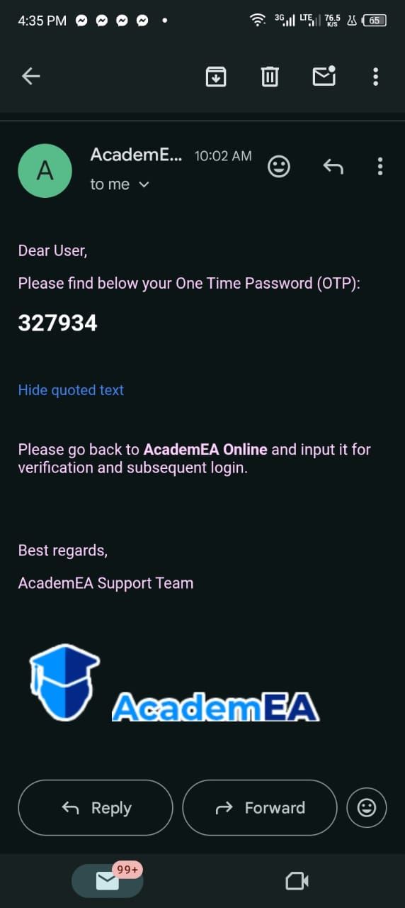

1. Go to the Login Page by opening qasaccounts.academea.net in your browser.
2. Enter Your Email & Password Type in your registered email and password.
3. Receive an OTP After entering your details, the system will send a One-Time Password (OTP) to your email or phone.
4. Enter the OTP Check your email (or phone) and type the OTP into the space provided.
5. Click “ Verify” Once you enter the correct OTP, click the verify button to complete the login.
6. If everything checks out, you’ll be redirected to your account dashboard
This section of the dashboard displays key summary information.
This includes the total number of students currently enrolled, the number of new admissions, and a breakdown of fee collections.
It shows how much money has been received today, this month, and over the current term, as well as how much is still expected.
It also includes figures related to feeding fees, offering a quick overview of the school’s financial performance.
On the left side of the screen is the navigation menu.
This menu helps users move between different parts of the system.
It includes options for managing students and staff, viewing financial records, generating reports, sending messages, and adjusting system settings.
This section serves as the main control panel, allowing quick access to all the core features of the platform.